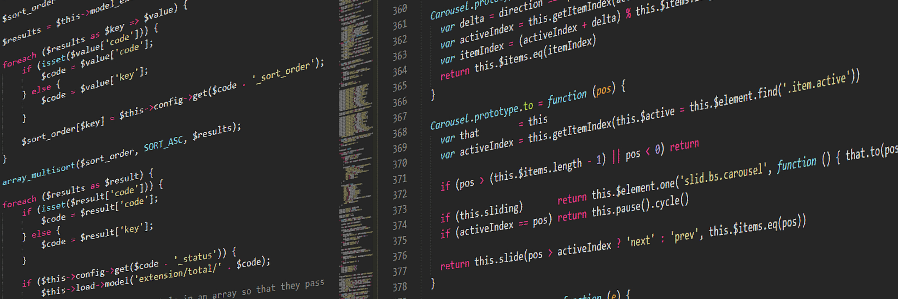

Intro
A bit about myself
Being a Computer Science student has taught me more than academics.
Aside from the random formulas and algorithms floating around in my
brain, I have become more of a self-dependent and organized person.
When countless due dates are combined with fast paced learning, it
forces you to adapt and be confident in your abilities. Competition
motivates me to become the best.
Aside from working at Opentext, I'm doing a 14 week Data Science
course in Mandarin; both to familiarize myself with the Hadoop/Spark
ecosystem and to practice my native language. I am also
slowly learning Hindi on Duolingo because why not? (It
is the world's third most popular language.) I love
competing, playing basketball and video games are my favourite after
work activities.
Welcome to my website.
League IGN: Matty Nicks
Work

Opentext
Software Developer | Java • HTML • Javascript | 2020-Present
Developed new features and did QA on the Opentext Media Management
app while working directly with product management. Used Java and
Spring for the back-end services; JSP, HTML, JS and CSS for the
front-end UI. The app supported Oracle, MySQL, SQLServer and
PostgreSQL when configuring local instances, so all 4 DB languages
were used when writing database scripts. Great first intership
experience exposing me to agile methodology in practice.
Tutor Bright
Tutor | Math • CS • Communication | 2018-Present
Tutored 3 kids weekly aging from grade 2 to university. Created
custom material based on their curriculum and understanding of the
subject. Taught basic math, calculus, advanced functions, data
management and computer science. Teaching is a hobbie and I love
passing on the information I have learned.
TDSB
Camp Counselor/Tutor | Leadership • Organization • Teamwork |
2019
Managed and organized campers daily activities. Built strong
communication, teamwork and mutual respect through basketball
coaching. Taught grades 10-12 advanced functions, computer science
and problem solving.
Projects
Work in progress...
See
Github>
for more!
Contact